NarrowSpec：缩窄推测解码草稿的残差流
NVIDIA 的 Alagappan Valliappan、Ankit More、Dheevatsa Mudigere 和 Jatin Mitra 在 NarrowSpec 中把推测解码的草稿隐藏宽度从目标模型的固定属性变成可比较的设计变量。初稿于北京时间 2026 年 11 月 18 日 12:40 提交，列于 arXiv 11 月 19 日公告批次。论文使用 SpecForge 和 SGLang，并比较公开的全宽参考草稿，本轮未核验到 NarrowSpec 专属公开代码。 arXiv:2611.23835
读取目标模型隐状态的草稿往往沿用目标的隐藏宽度。推测解码的速度既取决于目标每轮兑现多少 token，也取决于整轮成本，而沿用目标宽度会让草稿残差流上的各层承担全宽投影。
1. 背景和问题
1.1 解码速度取决于单轮成本和每轮兑现长度
普通自回归解码每生成一个 token 就再走一次目标模型。在单用户实时生成中，即使某张卡还有空闲的矩阵乘容量，请求仍要等这个顺序链完成；等待时间来自权重读入、缓存访问、算子发射和逐步输出，而且输入已经预填充后还会持续发生。推测解码把部分顺序工作转换成一个小模型提出候选、大模型用整块前向核验。核验可同时评估新位置的目标分布，生成机制最终兑现的仍是目标允许提交的路径。贪心条件下，提议和目标逐位相同才继续使用提议，分歧处由目标接管。采样下使用的是服务端采样与拒绝校验契约。只要目标和验证机制保持一致，草稿改变首先会改变接受统计及开销，不能直接按一次草稿的离线正确率换算目标模型的最终业务质量。
论文使用接受长度 AL 衡量每次验证实际提交的 token 个数，用一次验证与一次草稿的组合时间除以这个平均提交数估计解码时间。需要注意的是实现中的 bonus token、起草位置和提议位置的计数契约。DFlash 的一个锚点和后续掩码一起进草稿，送回目标的预测数比块内位置少一。EAGLE-3 沿草稿内部轨迹逐步产生提议，并由目标在下一轮一起核验。因此，相同的“平均接受三个 token”只有在提交数定义一致时才可以比较。论文没有把被接受的草稿 token 数与完整的模型输出长度混为一谈。它也把每轮推理时间和每个最终 token 的时间分开，防止更快的单轮掩盖更多的验证轮次。
更复杂的草稿，例如增加预测头、树状候选或扩大上下文，可能提高接受长度，却同时增加草稿计算甚至让验证需要处理更多的位置。反向选择是把每轮降低到可控成本，包括层数、缓存窗口、每轮草拟长度和输出投影的候选词表。隐藏宽度是另一条独立轴。深度决定连续层数，窗口决定看多少 token，词表轴决定投影要打分多少候选，残差的隐藏维度则决定每一层之间传多少特征。只把词表头做低秩分解，注意力和前馈仍读写原宽。只裁掉中间前馈的神经元又无法削减输入融合、注意力投影和词表头。在纸面上，整体缩窄更有机会同时触及各处耗时，但也压缩了草稿表达能力。NarrowSpec 的对照正是要测这里的净变化。
1.2 为什么宽度可以和目标接口分开选择
这类草稿常直接拿目标模型多个层的隐向量，用于恢复近期语境乃至此前已提交的符号。由于每个选中目标层的激活都是目标宽度，草稿若继续使用该宽度，张量接口直接，但这会把同一个维度固定到后续几乎所有矩阵。在目标核验完一批 token 后，草稿的职责是对目标短期轨迹做高覆盖率预测，验证多次保底，所以它对状态刻画的要求与目标在完整词表上生成的能力不同。目标信息可以先通过一个训练出的降维投影后再供草稿使用。这样始终保留目标自身的权重、核验和残差宽，草稿内部换用较少通道；共享嵌入和借用输出层留下的目标尺度边界则单独处理。宽度可独立选择这一点是架构自由度，论文所做的实证才是具体宽度下的信息保留和时延变化。
宽度并非所有算子尺寸的唯一决定因素。作者保持注意力头数、头维和前馈中间维度，草稿残差更窄主要改变接触残差的投影矩阵、归一化、搬运和词表映射。注意力乘法的头维以及缓存中的键值维度并不会按同样比例下降。即使权重为原来的四分之一，一次完整草拟还要访存、做索引、把草稿候选映射回目标词表并执行固定次数的步骤。小批量里权重带宽可能主导，大批量下核函数利用率、验证计算和长历史的缓存带宽可能重新决定瓶颈。结果里同时出现半宽优于四分之一宽与四分之一宽在另一设备上明显更快，对应的正是这些比例发生了变化。
本文以两个结构不同的草稿和两个目标检验这一思路。DFlash 用一次并行草稿前向给出一块预测，借目标的词表头聚合打分。EAGLE-3 只用一个草稿层，下一步读取自己的输出隐状态，回路顺序运行，使用训练过的独立词表头。它们分别让降维面对两种不同的时序和输出接口。Qwen3-8B 的目标主体为 NVFP4 稠密结构，GPT-OSS-20B 的主体为 MXFP4 MoE，两个目标输出头均为 BF16。选择这两类组合能检验效果是否依赖某一种草稿流程，也留下一个归因条件。跨目标读数会同时受到目标架构、宽度、词表和量化的变化，应以每一组内部与同一目标下全宽草稿的配对为起点。
1.3 为什么服务基线需要按执行路径审计
用户观察的是单位时间提交的输出，以及变长序列或多请求并发时的尾部等待。单条解码进入或离开连续批次会改变矩阵中活跃 token 数，踩到 CUDA Graph 的填充边界时还可能出现有效工作量没有增加但计算开销上升。论文使用固定每轮提议形状，有助于把草稿前向耗时与接受长度解耦后解释。若待部署引擎会提前停止草拟、主动缩短提议或动态分配验证预算，就要重测单轮工作和接受长度的相关性。相同的架构宽度降幅不能从固定批量速度直接外推到真实混合调度，更不能替代首次输出前的排队、分词、预填充和网络开销。
另一个需要提前锁定的口径，是草稿从头训练且目标固定。接受率由草稿的训练数据、监督目标、初始状态和预算共同决定。直接对训练好的全宽参数切片只提供一个运算形状对照，不会产生与重新训练的窄草稿可以比较的接受长度。公平的比较是尽量保持目标、训练提示及响应、数据顺序、步数与草拟长度一致，承认不同宽度可能需不同学习率。这样读到的收益是“采用这个窄草稿训练与部署配方”后能够实现的收益，也能解释为什么论文单独列开源草稿检查点作为参照。对大模型服务团队，这个实验尤其适合已有目标权重与验证契约、能够训练独立草稿的环境。对生成式推荐，短 SID 输出往往只有几步，初始前缀很长或必须宽束保持目录覆盖，草稿每轮可摊销的 token 更少。将本文方法迁移到推荐，首先要确认 proposal 与合法目录校验可以同并行形状运行，并明确目标是保持短序列的 candidate coverage、提高吞吐，还是压低单请求的解码尾部。
2. 方法
2.1 DFlash 的上下文预处理与并行草拟
一轮推测解码的纯时间分解为
符号解释：$T_{\mathrm{iter}}$ 为一次草拟和验证组合的迭代成本，$t_{\mathrm{verify}}$ 是目标核验部分，$t_{\mathrm{draft}}$ 是草稿阶段含前处理的耗时，$\mathrm{AL}$ 是每次验证平均提交的 token 个数，$\mathrm{TPOT}$ 是纯解码的平均每输出 token 时间。把平均成本和本次运行的平均兑现长度配对，才能判断缩宽的净效果。这里使用相近形状与稳定批次让阶段时间可比较，不能把忽略首轮所得到的每 token 时间解释为完整请求。
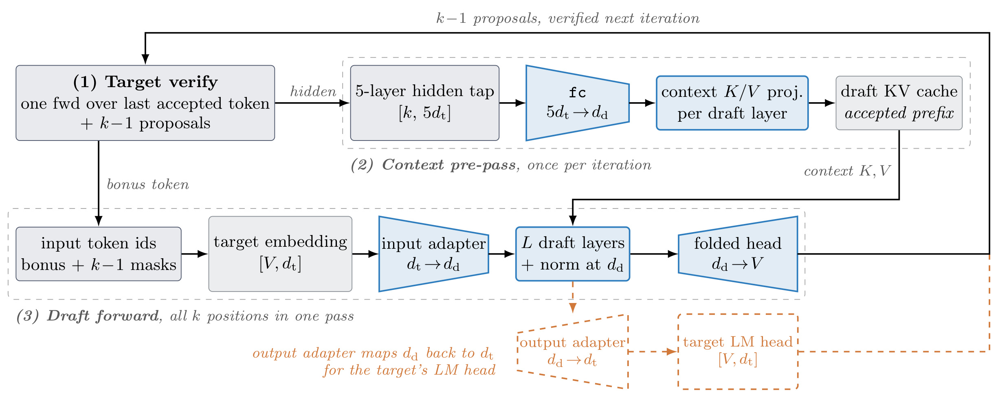
图一从上一轮的提议回到目标的批量验证。目标接收最后已接受的 token，加上上一草稿块生成的后续提议，产出真正提交的符号和多个层的隐藏特征。顶部的五层特征按最后一维拼接，蓝色投影从五倍目标宽度映射到草稿宽度。投影的结果喂给草稿各层的上下文键、值矩阵，写入已接受前缀的草稿缓存。目标额外兑现的锚点进入下一块，与尚未生成的位置掩码共同查目标输入嵌入，再映射成窄维度。草稿堆叠层从缓存读已确认语境，给这些位置一次并行计算，在右侧词表头形成新的提议。灰色模块属于目标尺度或不受草稿宽度控制的部分，蓝色模块随新草稿宽度改变，橙色虚线是训练仍需要的扩回目标宽度路径。图中缓存的前缀来自实际目标验证，而非把未获接受的候选持久追加。给定锚点加掩码的块状形状，当前轮接受长度影响之后写入多少真实上下文，却不把下一轮草稿前向改成相同长度。读这张图时要分别数目标验证的位置、草稿中有计算的位置和真正反馈给下一轮的提议，这三者不是同一数量。对于 Qwen3-8B 草稿使用五层，GPT-OSS-20B 则八层，缩窄前后这项深度保持不变。
DFlash 一轮内有上下文预处理和块前向两个部分。上下文投影只需要一次，草稿 KV 读取和写入维度由头几何决定。块前向借目标嵌入，窄草稿通过输入适配器承接每个目标宽 token 向量。全宽没有这笔额外计算。论文逐 kernel 表显示新增适配器为每轮 4.2–7.2 微秒，明显小于在其它草稿主体操作上节省的 212–351 微秒。要检验这个机理，剖析需分别标记输入适配、五层特征压缩、上下文 KV 投影和草稿层。混成一个前向时间，会漏掉窄路径新增工作，也看不见投影变快但缓存本身未变的边界。
2.2 训练适配器与折叠词表头
训练窄草稿时，目标模型仍冻结。在 DFlash 借用的目标头前添加输出适配器，把窄草稿状态映射回目标词表头预期的维度。这个适配器和窄模型是联合训练的，服务路径在加载时把两层连续的线性映射合成一个窄矩阵。
符号解释：$h_d$ 为最后归一化完成的草稿隐藏向量，宽度为 $d_d$。$W_{\mathrm{out}}$ 从草稿宽度映射到目标宽度 $d_t$，形状为 $d_t\times d_d$。$W_{\mathrm{lm}}$ 是不更新的目标头，形状为 $V\times d_t$，$V$ 为目标词表大小。加载阶段先以矩阵乘形成 $W_{\mathrm{fold}}$，推理每步只读 $V\times d_d$ 权重并产生同一个词表维度的草稿 logits。等号对应实数线性代数，前提是两个线性层之间没有归一化或其它非线性。
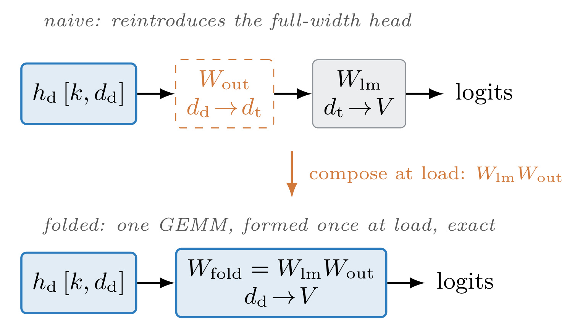
图二把朴素执行与预合成执行放在同一张图。上方先将 $k$ 个位置上的窄向量升回目标宽度，再让冻结的全宽头读这些升维向量，产生相同逻辑词表的 logits。下方没有去掉任何词表项，而是一次性将两个相乘矩阵合成一块较窄的矩阵，由窄向量直接打分。目标模型在自己的验证前向仍读原词表头，图中减少的是草稿每轮的权重访问。真实收益需要比较新增常驻权重与每轮少读多少字节。若多个草稿共存，窄头通常要按每个适配器分别预合成，常驻状态并不会免费共享。最后归一化放在升维之前使折叠成立。若在升维和词表头之间做逐 token 非线性或带动态参数的变换，就无法用这个矩阵恒等式替代。有限精度下折叠先舍入矩阵，未折叠先舍入中间向量，两条路径通常非常接近，但在候选近并列时可能翻转选择。原文以半宽 Qwen 配对草稿的 3405 个状态验证 BF16 对 FP64 参照，归一化 RMS 误差折叠为 0.20%，未折叠 0.21%，top-1 一致率分别为 97.2% 和 97.0%。这两个比例都以 FP64 分数为参照，不能把它们当作折叠与未折叠彼此的匹配率。
量化顺序另有约束。正文中两目标的词表头保持 BF16。量化草稿附录先用 BF16 权重得到折叠头，再对合成矩阵做一次 NVFP4 后训练量化。对已量化的目标头先接适配器并不自动具有同一舍入误差和缩放轴，论文没有验证直接折叠已量化的目标头。部署时分别回放折叠前后草稿的近并列候选、长度分布和最终验证输出，可以判断数值差异到底发生在提议还是验证选择。
2.3 EAGLE-3 的逐步草拟与输入折叠
EAGLE-3 的窄词表头随草稿一同训练，使用目标词表的已选子集，不需要输出适配器。它在输入端原先查目标嵌入后降维。服务导出将降维线性映射折入查表，实现上预计算新窄嵌入。
符号解释：$E_t$ 按符号为行，每行是目标的 $d_t$ 维嵌入，$W_{\mathrm{in}}$ 表示从目标列向量到草稿列向量的线性适配，转置后可右乘任一嵌入行。$E_{\mathrm{fold}}$ 仍保留词表行数，只变短每行特征。训练走查表再降维，推理直接查窄表。这是论文第 2.3 节文字机制的记号化，默认不考虑精度转换、载入与压缩格式附带的误差。
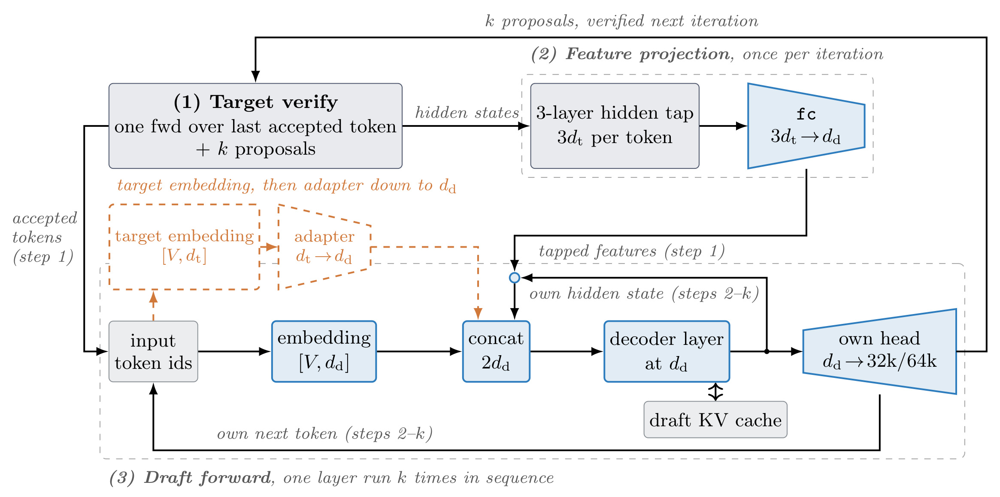
图三顶部仍从目标验证开始，但只拼三层目标隐状态。左侧已接受的 token 进入草稿首步，图右侧将窄词嵌入与来自目标的已投影状态拼成双倍草稿宽度，然后进入单层 decoder。首步接受的多个位置服务于草稿缓存写入，bonus token 的位置承担继续生成的作用。后面六步读取草稿自己的上一个 token 和隐状态，通过同一层接续词表打分，每步只提出一个新 token。细看蓝色的路径，模型在部署直接查窄嵌入，各步的自身隐状态均为窄宽。橙色训练路径保留共享目标嵌入和降维。右侧头不是目标的共享头，Qwen 配对覆盖三万二千项，GPT-OSS 配对六万四千项，再用编目映射回目标 ID。即便草稿上一步给出的 token 未被后续目标接受，它也能作为同一轮草拟的暂时状态；最后由目标判断哪些位置纳入真实上下文。在本文服务配置里首次草稿前向为 CUDA Graph 补到八个位置，整轮固定跑七次，接受长度变化不会同比改变每轮的草稿次数。与 DFlash 一次处理整个块的计算拓扑不同，重复输入适配会出现多次，把查表合并更容易产生收益。若显存紧张也可继续共享目标嵌入，并在每次前向支付适配计算，应该按实际每步 batch 并带入来回轨迹所在设备和传输成本测量。
2.4 残差宽度改变的投影边界
在固定深度、头数、头维和前馈中间尺寸时，一层动到草稿残差的主要投影参数量按下面关系缩放。这个式子表示去掉偏置等低阶项的尺寸关系，不是可直接用于预测毫秒的性能模型。
符号解释：$N_{\mathrm{proj}}$ 表示与残差流相接的主要投影参数总量，$d_{\mathrm{qkv}}$ 为拼接查询、键和值的输出宽度，$d_{\mathrm{attn}}$ 表示注意力输出投影前的宽度，$d_{\mathrm{ff}}$ 是前馈中间宽度。门控与上投影各有一份中间宽度，降回残差再有一份。此式对应附录图六中的 DFlash 层，EAGLE-3 的拼接输入对相应权重引入额外宽度系数。固定内部轴意味着注意力本体及草稿 KV 缓存尺寸不随 $d_d$ 自动缩小，输入和输出的适配成本也要另算。论文看到四分之一草稿权重形状的总体节省没有等比例转成 B200 的 kernel 时间，原因可追至这个规模关系没覆盖的固定算子成本和实际带宽。
3. 实验结果
3.1 同预算训练与 B200 主结果
作者在两个草稿家族和两个目标上分别训练全宽、半宽和四分之一宽。Qwen3-8B 的三个宽度为 4096、2048、1024，GPT-OSS-20B 为 2880、1440、720。数据取英语 Nemotron-Post-Training-v2 和 CodeAlpaca 的用户提示，丢掉原回答并用每组自己的固定目标在温度零重新生成回复，每个目标约八十万训练样本，并排除评估提示。使用四张 B200 和 SpecForge，从头训练 DFlash 六个 epoch、EAGLE-3 三个 epoch。同一组保持数据顺序、token 预算和调度形状，学习率按宽度选择，EAGLE-3 的初始化尺度按宽度调整。因此比较匹配的是已处理训练数据预算，单次训练计算量与收敛程度可以不同。速度比较在 SGLang 中进行，基础草拟形状和验证目标保持一致。
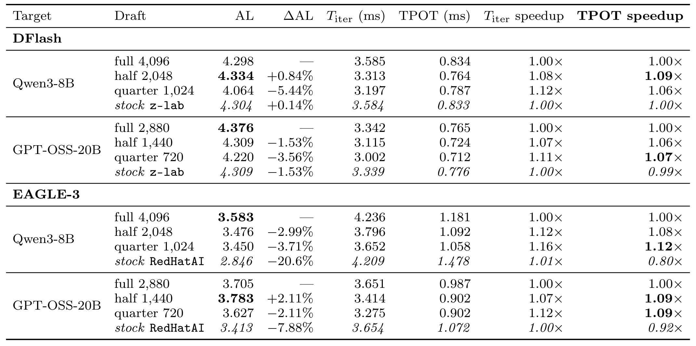
表三给出温度零、批大小一、八百八十条 SPEED-Bench 定性提示的主比较。每组作者自训的全宽行是速度分母，stock z-lab 与 stock RedHatAI 使用另外的训练配方，给的是性能参照。左侧接受长度是提交 token 数除以验证轮数，后两列分别用未舍入读数计算迭代和逐 token 加速。DFlash 配 Qwen 的全宽、半宽、四分之一宽迭代为 3.585、3.313、3.197 毫秒，接受长度为 4.298、4.334、4.064。四分之一宽的轮次最快，但其接受率下降吃掉一部分收益，最后每 token 分别耗时 0.834、0.764、0.787 毫秒。半宽配方在这个配置约快 1.09 倍，四分之一宽约快 1.06 倍。DFlash 配 GPT-OSS 两种缩窄都令接受长度降低，仍达到约 1.06 和 1.07 倍。EAGLE-3 配 Qwen 在四分之一宽达到该表最高的 1.12 倍，其每 token 时间由 1.181 降至 1.058 毫秒，接受长度由 3.583 降至 3.450。EAGLE-3 配 GPT-OSS 的半宽与四分之一宽都舍入为 0.902 毫秒，但前者接受长度从 3.705 升到 3.783，后者落到 3.627，分别用不同机制达到近似结果。主视图表明缩宽可以在同数据预算下改善四种现有路径，同时暴露速度最优宽度受接受损失影响。表的时间明确排除每轮会话首个包含预填充的解码步骤，不能将最大比值直接用于整个应用响应或实时队列。它也未给出静态上限之外的最小可用宽度。配套的训练表给了宽度、可训练参数等约束。全宽基线同样重新训练，让一张表能同时分开验证相对缩宽的收益，以及训练预算不同的参考差距。DFlash 的两个 stock 接受长度分别为 4.304 与 4.309，靠近对应作者全宽的 4.298 与 4.376。EAGLE-3 比较里，Qwen 公开参考 2.846 与作者全宽 3.583 相差较大，原文明确将外部模型当训练参照。比较窄草稿时若直接换分母到较弱 stock，会把训练配方收益和宽度收益叠加。
这些读数支持在选择草稿架构时，把接受损失和计算节省同时带回同一工作量。若工程只监控全局接受长度，半宽配 GPT-OSS 的 EAGLE-3 看起来比四分之一宽明显合适，实际最终逐 token 时间基本相当。若只盯迭代时间，又会在 DFlash 配 Qwen 的 B200 对照中选错宽度。在同批量和输出协议下，速度计算可写成
符号解释：$S$ 为全宽相对窄宽的逐 token 时间比，两个 $T_{\mathrm{iter}}$ 是各自的迭代成本，两个 $\mathrm{AL}$ 是匹配测量中的平均兑现数。右侧第一项大于一只意味着单轮更快，乘上低于一的第二项后可能大幅减少。批量扫描使用同一运行的全批迭代时间与整次运行的接受长度，改变计算口径会改变速度分母。
3.2 跨任务与 GB10 对照
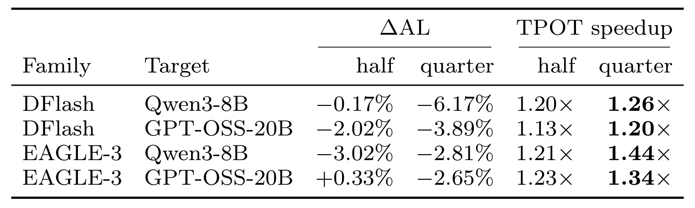
表四沿用单请求、温度零和同一批八百八十条提示，对应目标都在单台 DGX Spark 的 GB10 上服务。列的左半边读相对全宽接受长度变化，右半边读纯解码每 token 加速。DFlash 配 Qwen，半宽只损失 0.17% 接受长度，达 1.20 倍，四分之一宽损失 6.17%，仍增至 1.26 倍。DFlash 配 GPT-OSS 两种宽度为 1.13 和 1.20 倍。EAGLE-3 配 Qwen 的四分之一宽从半宽的 1.21 倍升至 1.44 倍，即使相对全宽少提交 2.81% 的 token，每轮成本下降仍足够大。EAGLE-3 配 GPT-OSS 半宽接受长度轻微上升 0.33%，四分之一宽反而降低 2.65%，速度依次为 1.23、1.34 倍。四组在 GB10 都是四分之一宽的纯解码时间更优，B200 上 DFlash 配 Qwen 的半宽最优则让这一结论有明确硬件条件。GB10 需要换用该设备可运行的部分后端，系统共享内存、可用服务显存与 B200 不同。因而右栏的倍数首先用于同设备宽度选择，不能读成两款设备的绝对速度比，也不证明改变设备单个物理属性就能得到同样提升。原文另外使用同一个剖析提示查出 GB10 的验证时间最大变化约 1.8%，大头仍落在草稿压缩费用上。
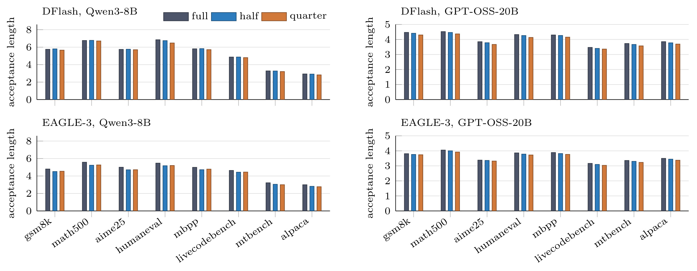
图四的横轴是八种数学、代码和对话基准，纵轴是温度零时每轮可兑现输出数。每个小图固定同一草稿家族和目标，颜色分别给三个宽度。左上 DFlash 配 Qwen 的三色柱在多项任务贴近，右上 DFlash 配 GPT-OSS 的整体柱高较低，两个纵轴刻度不同，不能用图形高度直接比对目标。左下 EAGLE-3 配 Qwen 中，半宽在八个任务的接受长度都低于全宽约 4.3%–6.2%，比八百八十提示面板的 2.99% 损失更明显。该结果提醒长尾调用可对隐藏容量更敏感。其它三组半宽在各任务与全宽相差不超过 2.2%，DFlash 配 Qwen 在八项中有五项接受长度超过全宽。任何任务中四分之一宽的最大接受损失不超过 7.4%。八组任务按所有解码轮汇总，温度零半宽约快 1.06–1.09 倍，四分之一宽约快 1.06–1.10 倍。这里的代码和数学数据覆盖了不同提示分布，观察对象仍是提出路径后被验证兑现的长度及速度，不应当作这些任务的最终答案质量比较。论文随后在温度一做稳健性检查，B200 总体速度比相对温度零移动不超过 0.03 倍，但每个配置独立采样文本，单任务差异可含采样噪声。
3.3 从验证轮到草稿核函数
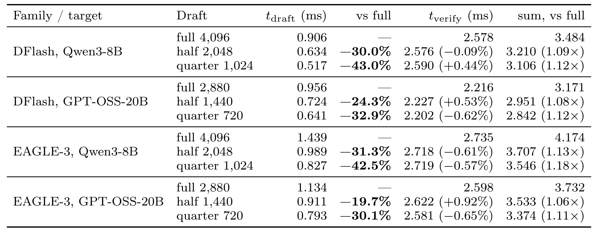
表五是一次指定提示的阶段剖析，单位为每次迭代毫秒。这里的耗时不是八百八十条评估面板的平均数，作者将跟踪与同提示未剖析运行核对，整体速度比例差为 0.2%–0.9%。DFlash 配 Qwen 的草稿由 0.906 降至 0.634、0.517 毫秒，验证则是 2.578、2.576、2.590 毫秒，较全宽只变化约百分之一以内。固定目标权重及提交规划后，整体轮次从 3.484 降至 3.106 毫秒，可远没有草稿单独 43.0% 的缩减那么大。EAGLE-3 配 Qwen 草稿从 1.439 下降至 0.827 毫秒，验证从 2.735 到 2.719 毫秒。EAGLE-3 配 GPT-OSS 的四分之一宽草稿只缩减 30.1%，仍有 2.581 毫秒验证成本。半宽草稿跨组合快约 1.25–1.46 倍，四分之一宽约快 1.43–1.75 倍。表中各行的 sum 包含两个阶段，在给定提议宽度下不能由接受长度来反推分项耗时。用于评估服务改动时，先核对窄草稿是否意外改变目标核验形状或目标前向的并发，再判断剩余时延来源。若验证成为主瓶颈，继续裁窄只能改善草稿所占的部分。该判断也解释低吞吐与高验证占比会同时出现的情况。
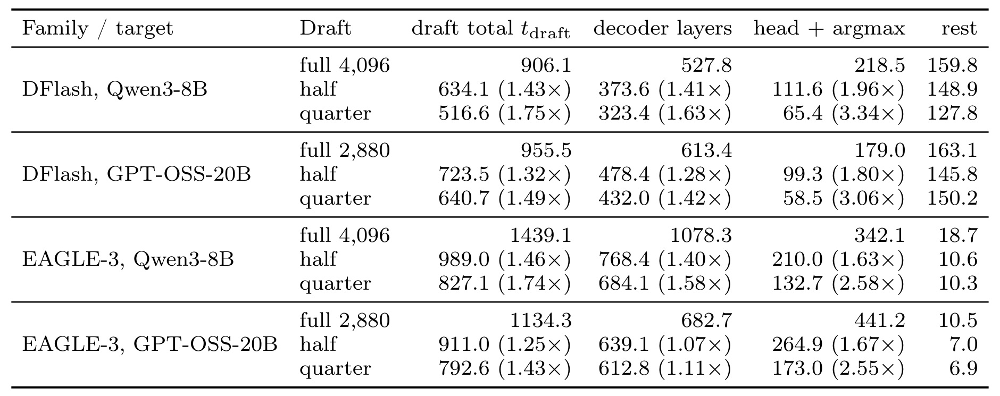
表六将同一次 B200 草稿剖析统一为微秒，在草稿总时间下拆出 decoder layers、词表头加 argmax 和剩余执行。以 DFlash 配 Qwen 为例，从全宽到四分之一宽，五层合计 527.8 降到 323.4，词表头和取最大降自 218.5 至 65.4，剩余约从 159.8 降至 127.8。词表头加 argmax 快了约 3.34 倍，仍受末端选择与算子固定时间影响。这个表的 head 列包括 argmax，下一张表的 head 单独看词表投影，两者的节省分母不同。DFlash 的剩余成本纳入上下文预处理、块准备、最终归一化和输入适配，Qwen 配对还含核间等待。EAGLE-3 的剩余列主要是将已接受前缀带入草稿的矩阵乘。同列定义配合不同路径阅读，才能解释为何 DFlash 的 rest 仍超过百微秒，而 EAGLE-3 的同列只有约十微秒，不能由这个差距判断 DFlash 的任意辅助步骤都差一个数量级。另一方面，EAGLE-3 配 GPT-OSS 的 decoder 从 682.7 到 612.8，词表头和 argmax 却从 441.2 降到 173.0。窄宽节省重心不同。若部署正在权衡只换 LM head 与重训全草稿，可用该拆分算出头部全被移除时的理论收益上限，再把验证支出加回。举例而言，DFlash 配 Qwen 即便把全宽词表头及其 argmax 的 218.5 微秒一笔抹掉，也还要接近 688 微秒草稿时间，高于整条窄路径的 516.6 微秒。该算术没有假设词表头能实际无成本运行，用来说明在这一设置里重构草稿形状比只优化词表头所能触及的范围更广。
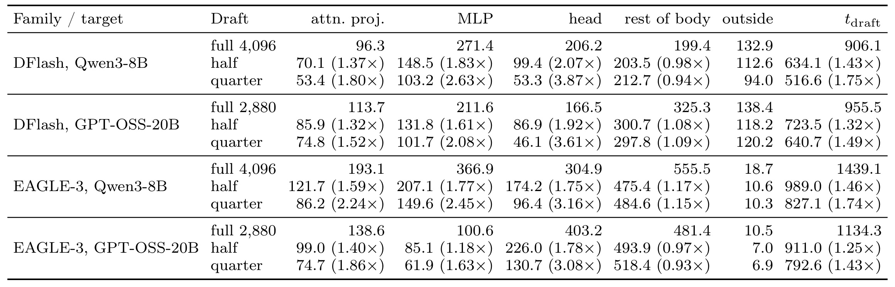
表七以微秒进一步拆分注意力投影、前馈、词表头、草稿主体其它成本与主体以外的前处理。括号比值是对应操作全宽相对窄宽的阶段倍率。DFlash 配 Qwen 的全宽至四分之一宽，注意力投影从 96.3 降至 53.4，前馈从 271.4 降至 103.2，词表投影从 206.2 降至 53.3，而主体其它项从 199.4 升到 212.7。这样可以看见适配与其它固定操作仍有成本。在四种组合中的三种，前馈加注意力投影合起来提供草稿主体节省的约 50%–60%。DFlash 两种目标的折叠词表头占主体节省的 38%–44%，该统计排除上下文预处理与核间隙等项目；使用表五整个草稿时间差会得到另一个比例。EAGLE-3 配 GPT-OSS 的全宽头部 403.2 微秒，四分之一宽 130.7 微秒。该配对前馈原始开销约 100.6 微秒，在低宽端接近小矩阵乘的运行底限，因而头部更支配。跨模型复用这套方法时，先把所有固定形状和适配成本打点，然后查受隐藏轴影响的投影是否累积成主耗时，比分别挑最快的单个 kernel 更接近真实收益。
GB10 上四分之一宽的草稿分项提速约 3.44–3.87 倍，B200 约 1.43–1.75 倍。附录的 DFlash 配 Qwen 带宽估计以 BF16 权重字节除以 kernel 时间。小批量时激活较小，这个假设便于横向看趋势，估算值不是设备实际带宽计数。全宽到四分之一宽，B200 的五类 GEMM 汇总从峰值比例 69% 到 47%，而 GB10 由 83% 到 81%。B200 上窄形状的小投影只有约 5–11 微秒，此时固定发射等延迟占比变大，权重减小四倍不能使执行也快四倍。GB10 窄形状的可比 kernel 约 46–226 微秒，多数维持较高比例。一个 H100 对照只覆盖 DFlash 配 Qwen，BF16 缓存配 FP8 主体、FA3 后端，不是把 B200 程序改一个 GPU 名字重跑。同样提示合同下半宽和四分之一宽都是 1.11 倍，接受长度分别相对增加 0.70% 和减少 4.42%。
3.4 单独缩窄 MLP 与批量服务
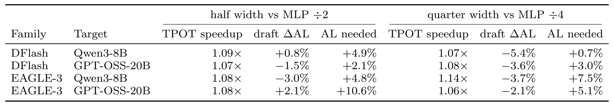
表八用全宽草稿的前馈权重切片，维持残差宽度，只按半宽或四分之一宽比例砍前馈中间层。这些切片没有重训，论文只计时、不用它们生成可信的接受长度。每组左列给同时单次计时条件下窄残差草稿本身的逐 token 加速，中列是该窄草稿接受长度变化，右列是前馈切片要追平它所需要的接受长度变化。以 DFlash 配 Qwen 半宽为例，窄残差流接受略增 0.8%，只改前馈版本需比全宽多约 4.9% 才能达到同样 TPOT。EAGLE-3 配 GPT-OSS 的半宽窄草稿约多 2.1%，只改前馈需要多 10.6%。四分之一宽条件四组门槛约 0.7%–7.5%。表的 TPOT 由单独剖析运行的迭代时间和表三接受长度估计，不能要求逐项等于主表。它在现有 shape 上表明单裁 MLP 节约的时延少，却没有训练后小前馈版本真正的接受率。若这一配方在另一个任务有不同归纳偏置，需要用同数据、调参规则和实测接受率重新检验；作者也把训练后的 MLP 或 head-only 对照留待后续。
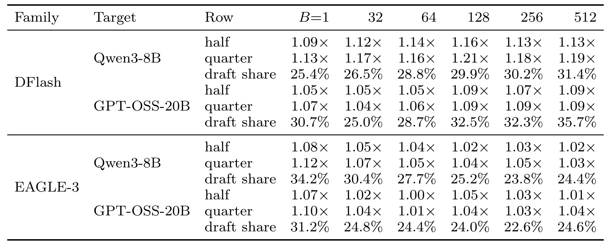
表九换用了 512 个吞吐提示，批大小从一到五百一十二。表的每格逐 token 加速来自同一次运行的全批迭代时间配整轮的接受长度。草稿占比取独立 Nsight 剖析片段，以全宽草稿耗时除以草稿和验证合计，所以不应拿右侧的收益完全归给这行比例。DFlash 配 Qwen 四分之一宽在批一为 1.13 倍，批一百二十八达这张表的 1.21 倍，批五百一十二仍为 1.19 倍。半宽在相同中间批量达到 1.16 倍。EAGLE-3 配 GPT-OSS 的半宽在批六十四为 1.00 倍，是趋同的明确反例。表中 EAGLE-3 两组大批的额外收益通常比 DFlash 小，同时全宽草稿占比随着批量增大可下降。附录提示接受长度比有按提示配对自助区间，迭代时间每组为一次运行，不能把所有边缘倍率都视为显著大于一。GB10 的 Qwen 配对最多容纳二百五十六，故 B=512 上没有同机结果。GB10 在中大批时的部分收益接近 B200，不能将小批的 1.44 倍拿到大批套用。在八百八十提示主面板与吞吐集都设批一时，DFlash 配 Qwen 四分之一宽分别报出 1.06 和 1.13 倍，提示批大小相同也不意味着提示分布、服务器设置和估计对象相同。线上若按长短会话分别入队，应同时报告有效批大小的分布，才有可能拿该表做近似对照。
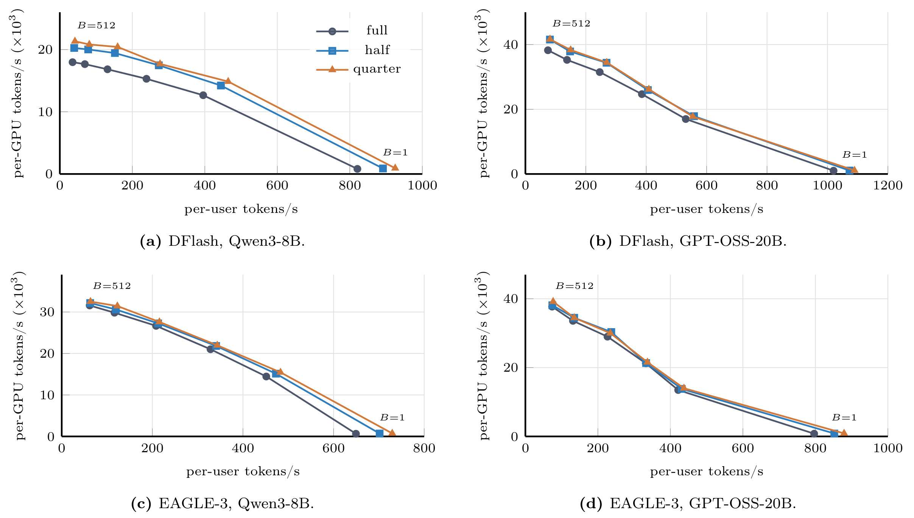
图五横轴为单用户 token 每秒，纵轴是单 GPU 聚合 token 每秒，越靠右单个输出越快，越靠上同卡全部并行用户合计输出越多。每条连线固定草稿宽度，从右向左的多个点分别是不同批大小，起点是批一、左上端是批五百一十二。这里每请求速度等于 1000 除以以毫秒计的 TPOT，纵轴再乘批大小。故相同批量下两轴的相对提升关系由定义绑定，蓝或橙点在右上不代表新增用户产生了额外的线上并发空间。DFlash 配 Qwen 面板的橙线与全宽线相距较明显，右下 EAGLE-3 配 GPT-OSS 的中高批部分几乎贴合，呼应表九里的接近持平配置。由于时间来自全批迭代，图中不会显式剔除并发配置的早退、首轮预填充占用、长短序列混跑和跨请求入队。这套图适合先圈定同批服务的候选，再在真实 arrival trace 上测 P95 和吞吐。长上下文附录从 8K 到 32K 的 batch-one 结果也要用迭代时延读取，四组单轮加速变幅均不超过 1.6%，并未附带对应长上下文输出的接受长度结论。
另一个负面切面来自草稿量化。DFlash 配 Qwen 的 W4A4 半宽每 token 0.751 毫秒，相对同宽 BF16 快 1.02 倍，相对全宽 BF16 快 1.11 倍。四分之一宽的 W4A4 虽从 3.197 降到 3.130 毫秒每轮，却因接受长度从 4.064 降至 3.925，TPOT 从 0.787 增到 0.797 毫秒，相对同宽反而是 0.99 倍。整条草稿的宽度和量化都能压低某些算子耗时，同时都可影响兑现数。它们在算子约束上可以叠加，在解码系统上应实测交互。
4. 总结
NarrowSpec 将草稿宽度独立为设计变量，使同一目标、同一提议契约下保留目标的表达能力，把草稿从长期继承全宽的惯例中松开。实验最可迁移的结论是，决策应跟着每轮时间与接受长度的乘积走。B200 的 DFlash 配 Qwen 明确说明节省最多的单轮可能落后于半宽的逐 token 表现，GB10 的同组合又可以由四分之一宽胜出。狭义输出折叠复用了训练得到的线性适配器与原目标词表知识，在有窄头常驻空间的服务里省去一层升维及重复读取全宽头。即使只打算复用一部分机制，也优先保留对输出头数字精度、草稿带宽和真实接受行为的联合验收。
4.1 局限与风险
- 目标、草稿和任务覆盖有限。 两个目标的主体分别是稠密 NVFP4 和 MoE MXFP4，两个草稿家族读出的目标层数也不同。固定两个模型下的回放能确认该配方可行，却不足以保证更激进的宽度、不同 tokenizer 或蒸馏域同样可接受。EAGLE-3 配 Qwen 在八种任务中半宽接受损失更明显，说明一组综合面板可能掩盖关键业务层。
- 同数据预算与多种训练随机性是不同因素。 中间尺寸、深度和数据顺序固定，宽度相关学习率和初始化另外调试，主结果每种宽度来自一次训练。无法从这一实验分解缩宽必然带来的接受变化和某次初始化的影响。公开参考检查点的接受差距也混有训练数据和配方。
- 计时没有覆盖完整请求。 面板刻意排除带预填充的步骤，吞吐图是固定批量计算。完整请求中还有目标预填、采样后处理、队列、缓存调度和通信。第六节的长上下文试验给迭代时间，最终输出 token 的实际速度需要另测接受率。
- 缩窄可以增加常驻权重。 折叠词表头或生成独立嵌入表，降低每轮数据访问，但新表与目标原表在显存内共同存在。附录的半宽 EAGLE-3 配 Qwen 新增草稿权重约 1.022 GB，全宽约 0.799 GB，草稿缓存尺寸受头几何控制而保持不变。若线上最大 batch 由显存而非解码时间限制，先核权重、缓存和并行草稿的实际容量。
- 折叠有精度与量化边界。 实数等价不等于逐位等价，低分差处可改变提议。作者没有验证将已经量化的目标头直接折叠，W4A4 附录的四分之一宽也显示迭代更快却降低输出效率。线上版本需要在目标后端上重新查融合与舍入。
4.2 后续验证
- 固定目标并重跑宽度扫描。 使用真实提示分布与相同的词表约束，至少比较全宽、半宽和四分之一宽，记录每条请求的 AL、验证轮数和每轮耗时。按输出长度、领域和采样温度分层，会比只读总体 TPOT 更早看见成本转移。
- 分开做数值与逐阶段验收。 对同一个草稿先比折叠前后 FP32/FP64 参照下的 logits、近并列 top-k 和目标兑现序列，再测上下文前处理、投影、验证及首 token。EAGLE-3 额外数一下独立窄嵌入表的常驻量和每步省下的 GEMM，DFlash 则检查按块调用适配器是否仍值得保留。
- 用同一份流量回放比较服务预算。 同步记录预填充延迟、稳态 TPOT、端到端尾延迟、每卡吞吐和可容纳最大批次，分别汇报等并发与等显存结果。若迁移到生成式推荐，再核对短 SID 的合法性、召回覆盖和验证可并行性，避免只优化草稿吞吐却改变候选分布。